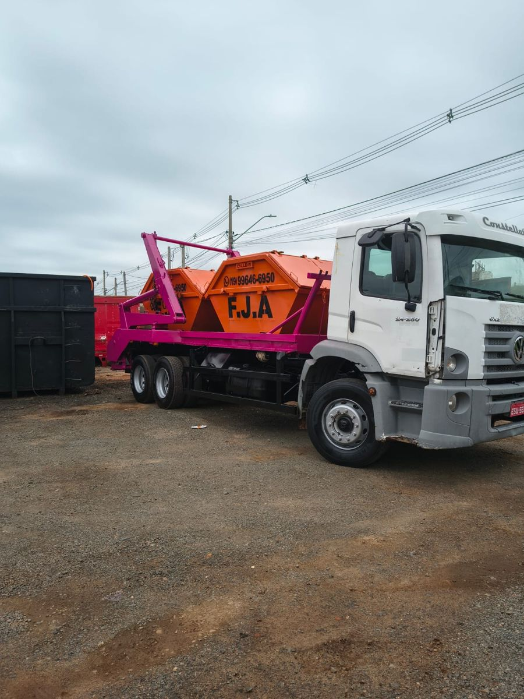

Caçamba para Entulho
Locação de caçambas para entulho de obras e reformas. Ideal para descartar e retirar resíduos de construção e manter a obra organizada.
Entulho de obraCaçambas para entulho, caçamba rolão, transporte, limpeza e apoio com máquinas.

A FJA cuida do transporte, da retirada e da limpeza e, quando necessário, ainda coloca máquinas para ajudar no serviço.
Locação de caçambas para entulho de obras e reformas. Ideal para descartar e retirar resíduos de construção e manter a obra organizada.
Entulho de obraPara transporte e limpeza de materiais como madeira, plástico e outros resíduos de limpeza de construção.
Não é para entulhoTransportamos as caçambas e fazemos a retirada e limpeza de materiais de construção, como madeira e plástico, deixando o local mais organizado.
Mais praticidadeQuando necessário, disponibilizamos máquinas para ajudar na limpeza, como carregar terra e movimentar materiais.
Sob necessidadeUse quando a obra ou reforma gera entulho de construção. É a opção para descartar e retirar esses resíduos.
Use para madeira, plástico e outros resíduos de limpeza de construção. A rolão não é indicada para entulho de obra.
Menos dor de cabeça para você, mais obra organizada.
Chame a FJA pelo WhatsApp ou envie o formulário de orçamento.
Informe o tipo de material e o que você precisa fazer.
Caçamba para entulho, rolão, transporte, limpeza ou apoio com máquinas.
A caçamba ou o equipamento é entregue e o serviço é realizado.
Caminhões, caçambas e máquinas reais da FJA.
Conte o que você precisa e receba o atendimento direto da FJA.
Solicitar orçamento pelo WhatsApp